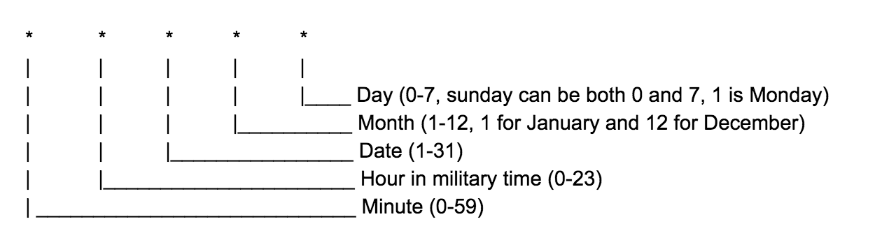
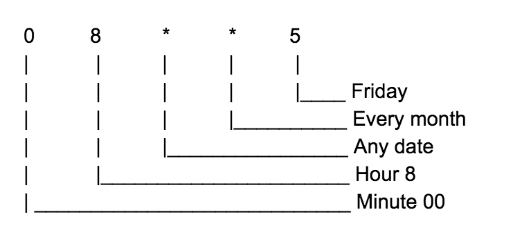

February, 14 2020
Cron
For this blog, I decided to write about cron
Knowing Cron is really important. We can use cron to schedule our script so it will run automatically at a certain time based on what we set on our cron. It is a very popular and useful tool in linux or unix based operating system. You can also use cron on AWS as a trigger for your lambda function.
There are several cron generators like that you can use online like https://crontab-generator.org/ but it is important for us to also understand the format and what it means.
Below is the format:

Here is an example:

So based on the example above, the script will be executed every Friday at 8:00 am
List of useful operators in using cron:
- ’ * ‘ - asterisk means all values
- ‘ , ‘ - comma is used to specify a list of values
- ’ - ‘ - dash is used to specify a range of values
- ’ / ’ - is used to specify a step value. An example is when you wanna say every 2 hours, you can put */2